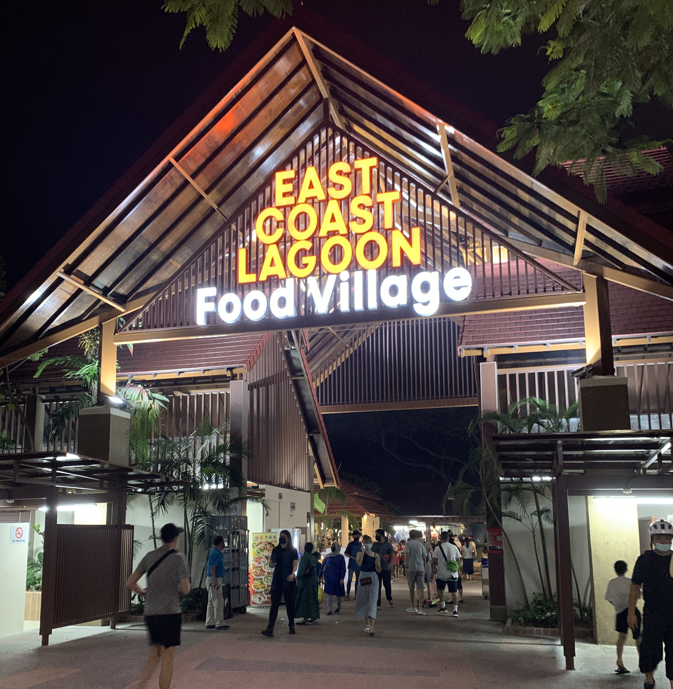
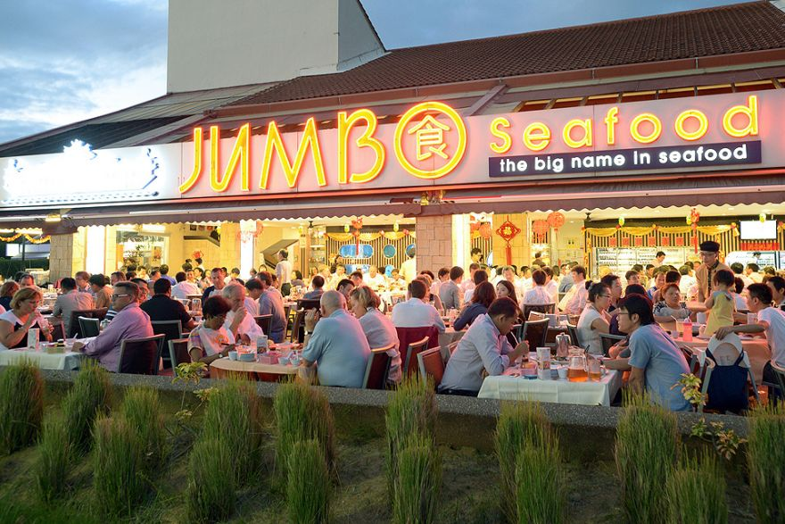
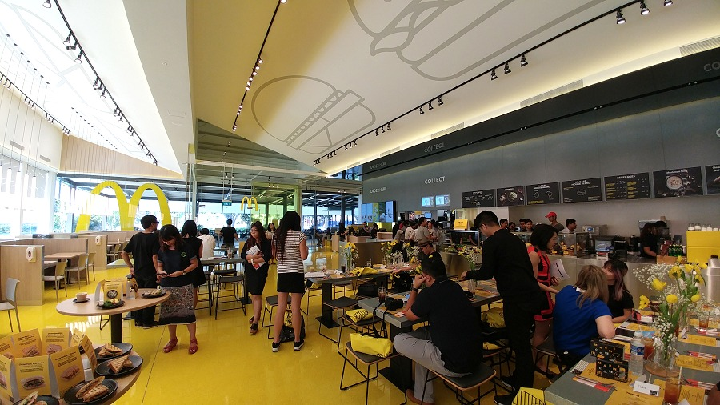
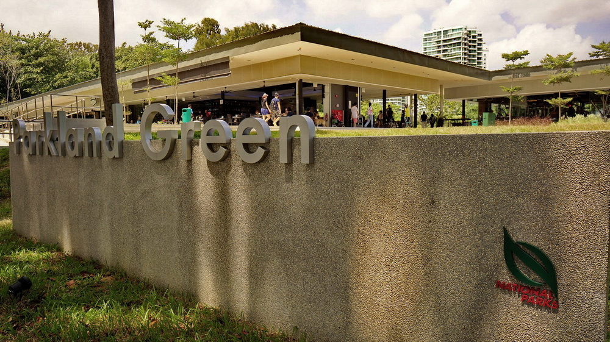

Where to eat in East Coast Park
1. East Coast Lagoon Food Village

Seafood by the beach – what could be better? This is the place to hit up if you’re looking for a spot to have a meal with a large group of friends.
Plenty of stalls specialise in barbecued seafood, as well as satay and other local delights, so take your pick. Don’t forget to order a side of rojak
for some variety.
2. PS.Cafe

Thanks to PS.Cafe’s East Coast branch, we now can enjoy decadent brunch delights by the sea. Look forward to chorizo and calamari stew,
salmon benedict, crab tart and beer-battered fish and chips. Oh, don’t forget to put in an order for the eatery’s popular truffle fries.
3. Jumbo Seafood
Here’s a fun fact: this iconic seafood restaurant opened its first outlet at East Coast Park in 1987. Now, onto the food – though most of us need
no introduction. Go straight for the chilli crab and mop up the delish gravy with deep-fried golden buns. Other highlights include bamboo clam
steamed with minced garlic, cereal prawns and seafood fried rice. Bring the entire fam for communal-style dining!
Visit us here to book a reservation
4. Macdonald's @ Marine Cove
The old McDonald’s @ East Coast Park was one of the most popular fast food outlets in Singapore. When McDonald’s returned to the redeveloped
Marine Cove with a fresh concept store, the crowd returned as well. It is one of the reasons why many people gather in Marine Cove.
McDonald’s at Marine Cove is spacious with an air-conditioned dining area as well as a non-air conditioned space overlooking the children’s playground.
Location: #01-05 Marine Cove, Singapore 4498765. Dine at Parkland Green
 Parkland Green is a food and lifestyle hub at East Coast Park that is home to a variety of family-friendly beach restaurants and shops.
It is a good place to enjoy seaside dining, chill out, or engage in various fun activities. Drivers will be happy to know that there is plenty of parking space here.
- List of restaurants:
- 1. Cheers-Killiney Cafe
- 2. Kebab Station
- 3. Bakery & Bar St.Marc
- 4. Starbucks Coffee
- 5. Patro's Sports Bar & Restaurant
- 6. Basil & Thyme
- 7. Atmosphere Bistro
- 8. Sandbank